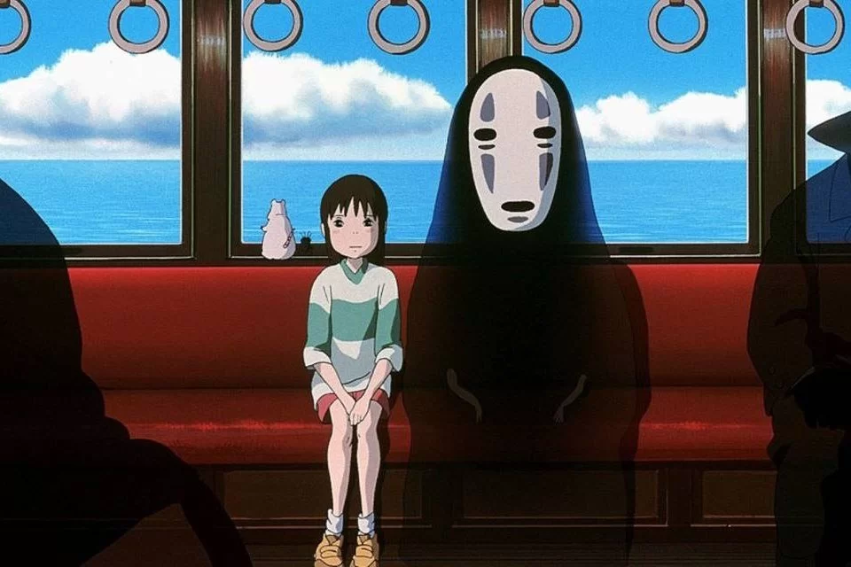
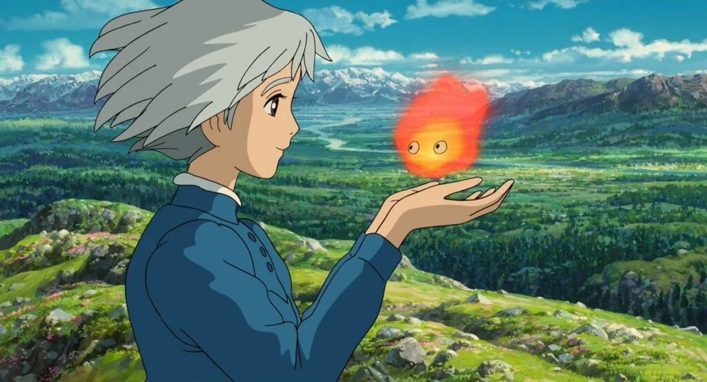

Bem vindo ao quiz do studio ghibli, qual filme vc gosta mais?

Que tipo de magia você gostaria de ter?
Você escolheu viver no mundo Totoro
Você ganhou o poder de controlar o vento!!
Vc vira o protetor das florestas com sua magia de falar com os bixinhos